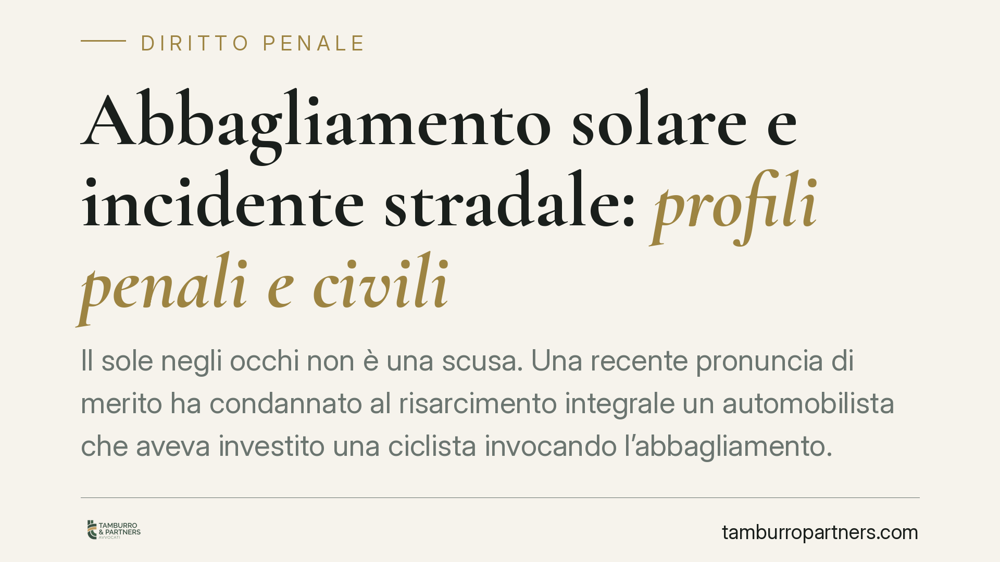

Abbagliamento solare e incidente stradale: profili penali e civili
Il sole negli occhi non è una scusa. Una recente pronuncia di merito ha condannato al risarcimento integrale un automobilista che aveva investito una ciclista invocando l'abbagliamento. Il caso apre due fronti: quello penale delle lesioni stradali e quello civile della presunzione di colpa. Vediamo perché la luce del sole, essendo prevedibile, non libera il conducente dalle sue cautele obbligatorie.

Il caso
Un automobilista investe una ciclista e si difende sostenendo di essere stato abbagliato dal sole. Secondo la ricostruzione riportata dalle cronache giuridiche, il Tribunale di Santa Maria Capua Vetere ha respinto la tesi difensiva, condannando il conducente al risarcimento integrale del danno.
*Nota di trasparenza: la sentenza è una pronuncia di merito di cui non risultano disponibili gli estremi completi (sezione e numero). La citiamo come decisione di merito non massimata, senza attribuirle valore di principio consolidato.*
Il profilo penale: lesioni stradali
Quando dall'investimento derivano lesioni personali, entra in gioco l'art. 590-bis del codice penale, che punisce le lesioni personali stradali gravi o gravissime commesse con violazione delle norme sulla circolazione.
In sede penale l'onere della prova segue le regole ordinarie del processo penale: è l'accusa a dover dimostrare la colpa del conducente, cioè la violazione di una regola cautelare (velocità inadeguata, mancato uso di occhiali da sole, distanza di sicurezza non rispettata).
Qui sta il punto tecnico: l'abbagliamento solare è un fenomeno prevedibile e ricorrente, non un evento eccezionale. Chi guida sa che in determinate ore e direzioni il sole può accecare. Per questo la giurisprudenza tende a escludere che l'abbagliamento integri il caso fortuito — l'evento imprevedibile e inevitabile che interrompe il nesso causale ed esclude la colpa. La Cassazione si è più volte espressa in questo senso *(orientamento da verificare negli estremi delle singole pronunce)*.
Il profilo civile: la presunzione dell'art. 2054 c.c.
Sul fronte risarcitorio opera l'art. 2054, comma 2, del codice civile. In caso di scontro tra veicoli si presume, fino a prova contraria, che ciascun conducente abbia concorso a produrre il danno. Nell'investimento di un pedone o ciclista il conducente del veicolo è gravato da una presunzione di colpa.
Si tratta di una presunzione relativa: ammette prova contraria, ma l'onere ricade sul conducente. Per liberarsi deve dimostrare di aver fatto tutto il possibile per evitare il danno. Non basta dire "il sole mi ha accecato": occorre provare di aver adottato ogni cautela — ridurre la velocità, indossare occhiali da sole, arrestare la marcia se la visibilità era compromessa.
La differenza tra i due piani è netta. In sede penale è l'accusa a dover provare la colpa; in sede civile è il conducente a dover provare la propria diligenza per superare la presunzione a suo carico. Un'assoluzione penale, quindi, non chiude automaticamente il fronte risarcitorio.
Le implicazioni assicurative
Il risarcimento passa di norma dall'assicurazione RC auto del veicolo. Attenzione però a due conseguenze concrete:
- il sinistro incide sulla classe di merito, con aumento del premio negli anni successivi;
- l'assicuratore può esercitare la rivalsa verso l'assicurato nei casi tipici previsti da polizza e legge (guida in stato di ebbrezza o sotto stupefacenti, patente scaduta o mancante, veicolo non revisionato, conducente non autorizzato). La rivalsa non opera genericamente, ma solo in queste ipotesi.
Cosa fare in concreto
Se sei il conducente coinvolto:
- Non ammettere colpe generiche sul posto: limita le dichiarazioni ai fatti e attendi la ricostruzione tecnica.
- Documenta le condizioni della strada, l'orario e la posizione del sole con foto e testimoni.
- Verifica la copertura della tua polizza e informati subito su eventuali profili di rivalsa.
Se sei la persona investita:
- Fai refertare ogni lesione al pronto soccorso e conserva la documentazione sanitaria completa.
- Raccogli i dati del veicolo, dell'assicurazione e dei testimoni presenti.
- Valuta con un legale il doppio binario — risarcimento civile e denuncia-querela per le lesioni — perché i due percorsi seguono regole e tempi distinti.
In sintesi
L'abbagliamento solare è un rischio prevedibile della circolazione. Non esonera dalle cautele obbligatorie né sul piano penale né su quello civile. Chi guida verso il sole deve adeguare la propria condotta: la legge chiede prudenza, non l'impossibile — ma proprio per questo pretende che si faccia tutto il possibile.
Contributo informativo a cura di Tamburro & Partners Avvocati - Avv. Giuseppe Tamburro. Non costituisce parere legale.
Ogni condominio ha una storia a sé.
Se gestisci un'amministrazione e vuoi un confronto su una specifica questione condominiale, scrivi allo studio. Ti rispondiamo entro un giorno lavorativo.